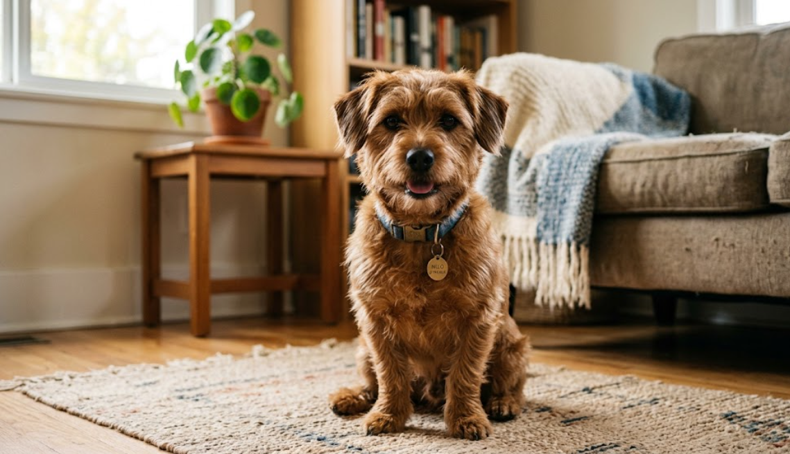
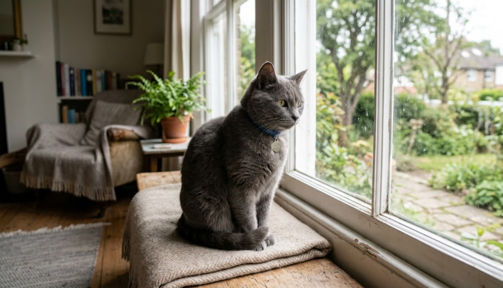
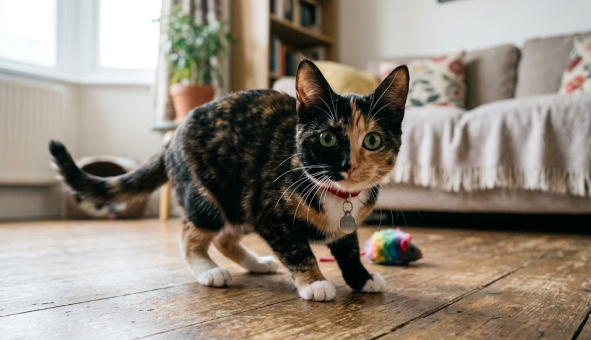
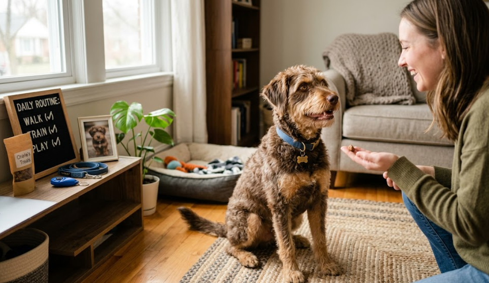
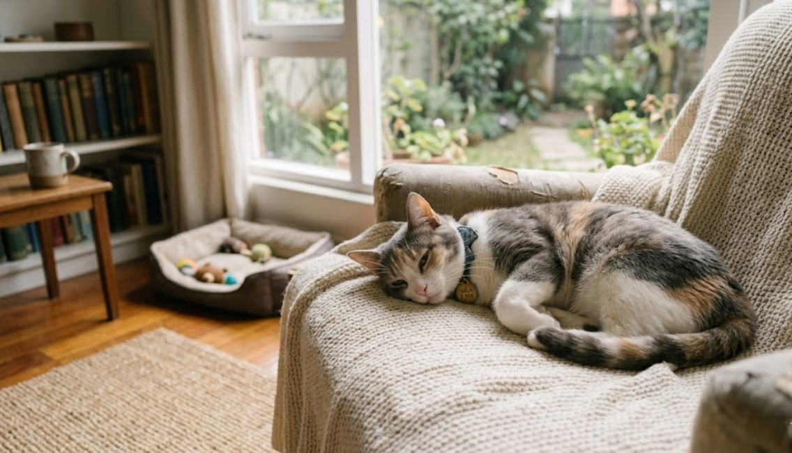

Milo
A gentle, people friendly dog who enjoys short walks and naps near you.
Here are a few pets currently looking for a home. Photos are examples for this student project in a real rescue website, each listing would be updated regularly.

A gentle, people friendly dog who enjoys short walks and naps near you.

Full of energy and curiosity. Best with someone who likes being active.

Independent but affectionate. Loves sunny windows and gentle attention.

A curious explorer. Will happily investigate every corner of your home.

A sweet dog who learns quickly with routine and positive reinforcement.

Very chill cat. Prefers a calm home and a consistent daily routine.